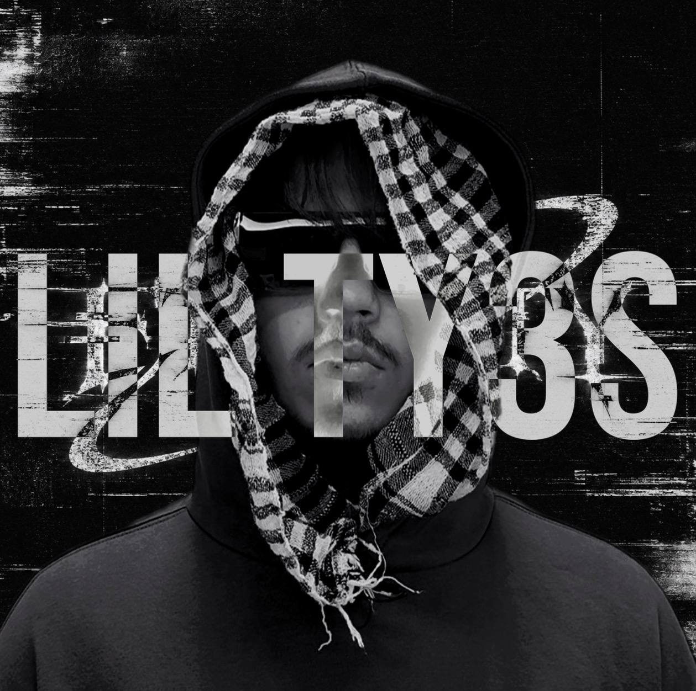

LIL TY3S
RAGE / TRAP / ALTERNATIVE HIP-HOP
Украинский артист, автор и основатель независимого музыкального лейбла Eternity Records. Под именем LIL TY3S («Тайтрис») он соединяет агрессивную, перегруженную энергетику современного рэпа с личной и эмоциональной стороной творчества.
Начав с самостоятельных экспериментов со звуком, TY3S постепенно превратил отдельные треки в полноценный артистический проект. Одним из первых крупных этапов стал альбом «Ty3s», выпущенный 15 сентября 2024 года и включающий 20 треков. Важное место занимает сотрудничество с молодыми артистами и продюсерами, включая Blessty.
Звучание артиста строится вокруг массивного баса, резких ударных и перегруженных синтезаторов. При этом темы роста, перемен и уверенности в себе соседствуют с более личными переживаниями. Визуальный мир TY3S включает образы шута, карнавала, денег, роскоши и абсурда. Фразы «Тайтрис внутри меня» и «99 — это gate» стали характерными элементами его мифологии.
В 2026 году TY3S развивает более масштабное звучание и концепцию: статус, трансформация, самоутверждение и личный рост. Среди новых работ — «Кусает губы». Параллельно он создаёт Eternity Records — объединение артистов и продюсеров, развивающее производство музыки, биты, лупы, сведение, мастеринг и треки под ключ.
Его цель — построить узнаваемый мир вокруг имени TY3S и вывести проект и лейбл на международный уровень.
LIL TY3S — артист, основатель и человек, превращающий собственное имя в самостоятельную музыкальную систему.